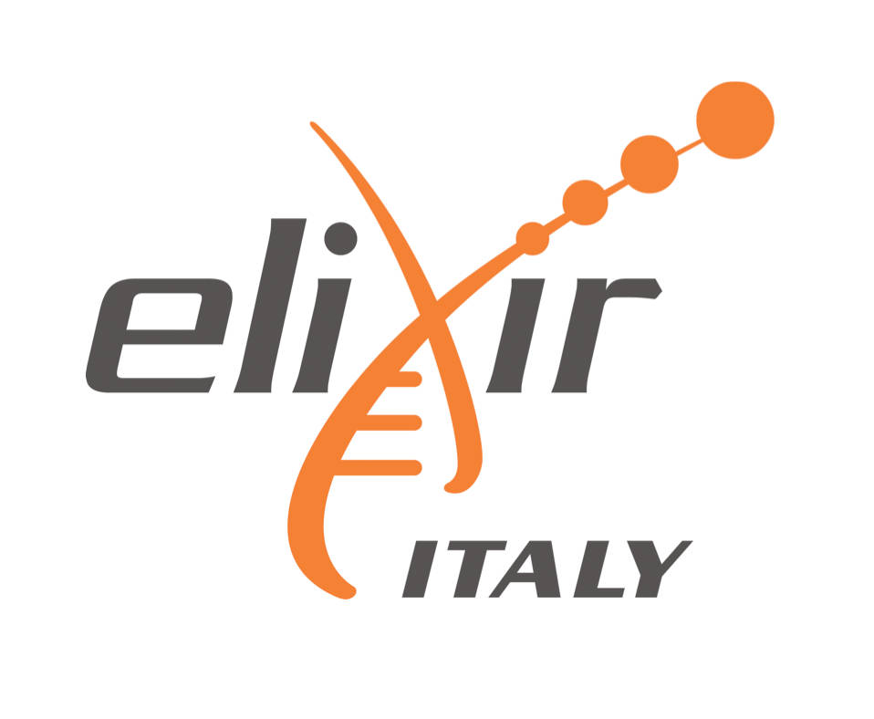

Workshop in Computational Methods, Standards and Experimental Procedures
19-20 June, 2017 - XXXXXX, Bari, Italy
and
Summer School in Advanced Computational Metagenomics
21-23 June, 2017 - Una Hotel Regina, Noicattaro, Bari, Italy
|

In recent decades, striking developments in DNA sequencing technologies and rapid progress in associated analytical procedures have accelerated developments in basic and applied “–omics” research, promising (and in some cases providing) breakthroughs in our understanding of genetic and epigenetic determinants of human health and disease as well as in agricultural and environmental fields of study.
In particular, the ultra-high throughput of modern sequencing platforms has also facilitated the development of metagenomics, the study, at a molecular genetic level, of the composition and possible interactions between members of complex microbial communities.
Currently, metagenomics data can be categorized in metataxonomic studies, where sequencing of marker genes allows the identification of genera and species in a sample, or untargeted (or shotgun) metagenomics, where all the DNA in a given sample is sequenced in order to study the strains and molecular functions present. This information can also be coupled with metadata regarding diet, immune reactivity, health, productivity, fitness etc. in different systems to infer the nature and roles of community interactions.
In this light, the bioinformatics community faces the enormous challenge of handling, annotating and analysing heterogeneous metagenomic big data. A multitude of computational tools to deal with the various steps of data analysis (quality control, analysis, phylogenetic assignment, mapping, visualization, etc.) have been – and continue to be - developed. This jungle of possible tools and pipelines often causes great confusion in the researcher approaching –omics data analysis. Different pipelines can lead to different conclusions and to incompatible results, simultaneously threatening our understanding and capacity to integrate data, and ultimately undermining our potential to make new discoveries.
While notable initiatives including; the International Human Microbiome Standards (IHMS), the Earth Microbiome Project (EMP) and the STAR project have committed to the development of Standard Operative Procedures (SOPs), the ultimate choice of the tools to adopt is in the hands of the analysts themselves. There is thus a clear need for initiatives to train, support and encourage researchers in adopting standard methods and procedures for data analysis.
The ELIXIR-IIB infrastructure is facing this challenge by establishing a week-long Workshop & Summer School events in Advanced Computational Metagenomics Studies.
A two-day workshop will precede the three-day intense training school where eminent specialists in the field will be delivering interdisciplinary training in computational metagenomics for the next generation of scientists.
The faculty of the School will include noted experts and trainers in the fields of metagenomics-meta analysis, data warehousing, annotation and standardization. These experts will discuss and provide training in the use of SOPS, pipelines and statistical methods for data interpretation. We are convinced that these skills are essential for the modern biologist in almost all fields of research, and that attendance will also represent, especially for young scientists, a powerful boost to a researchers CV.
|